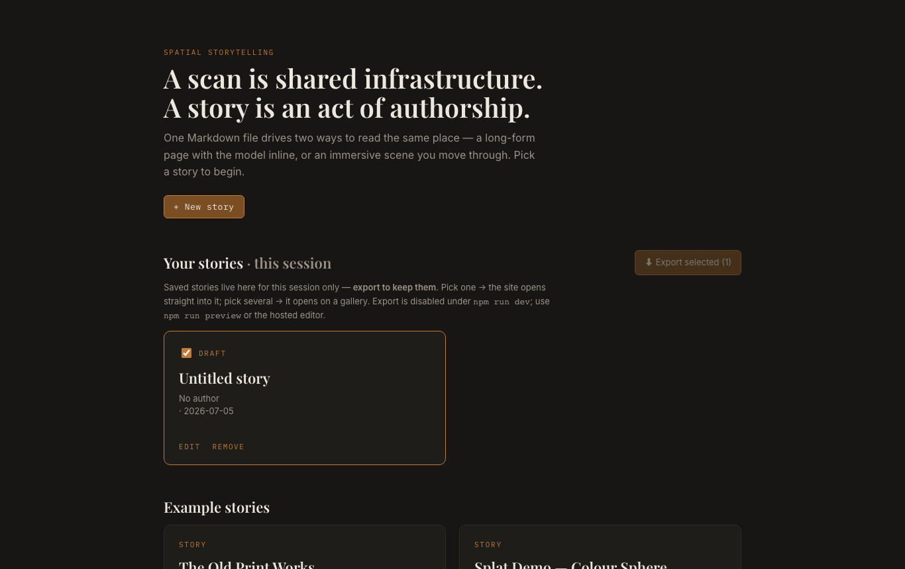
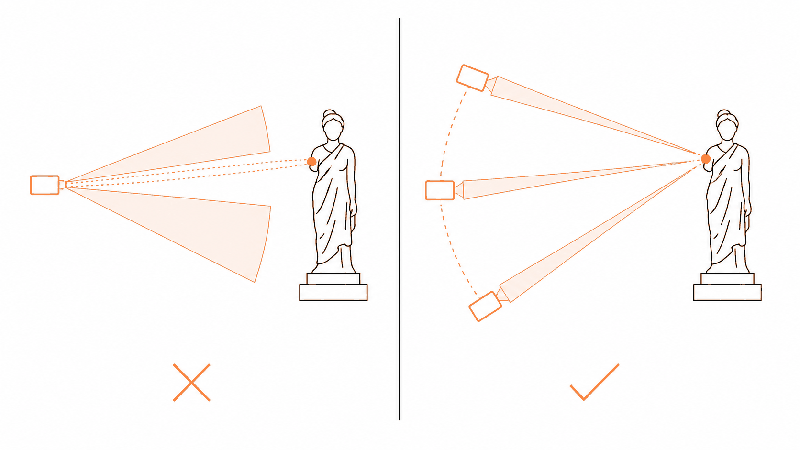
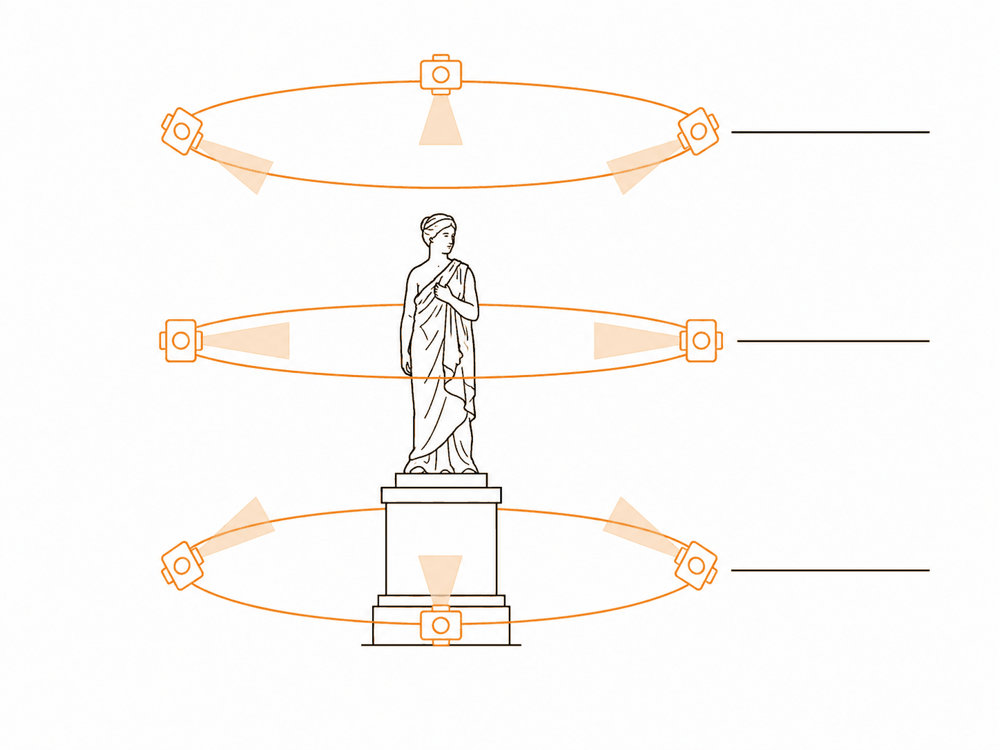
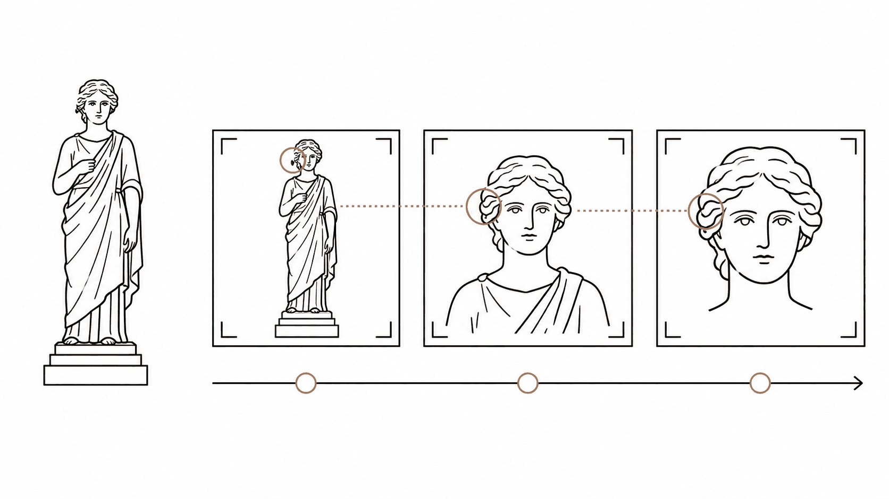
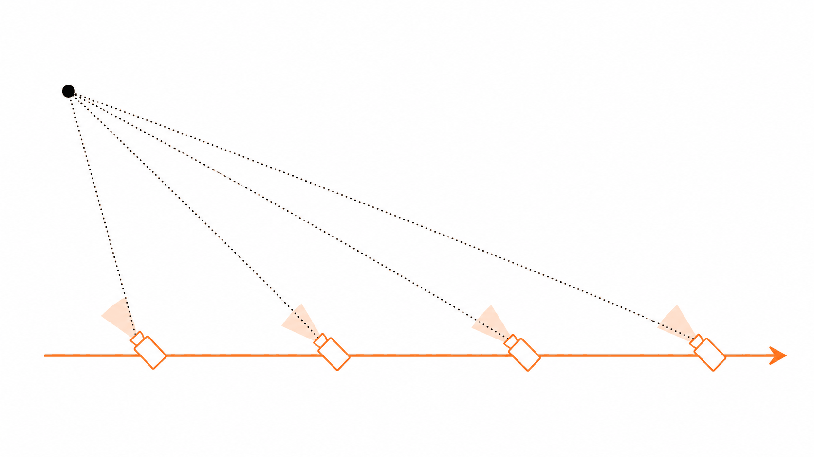
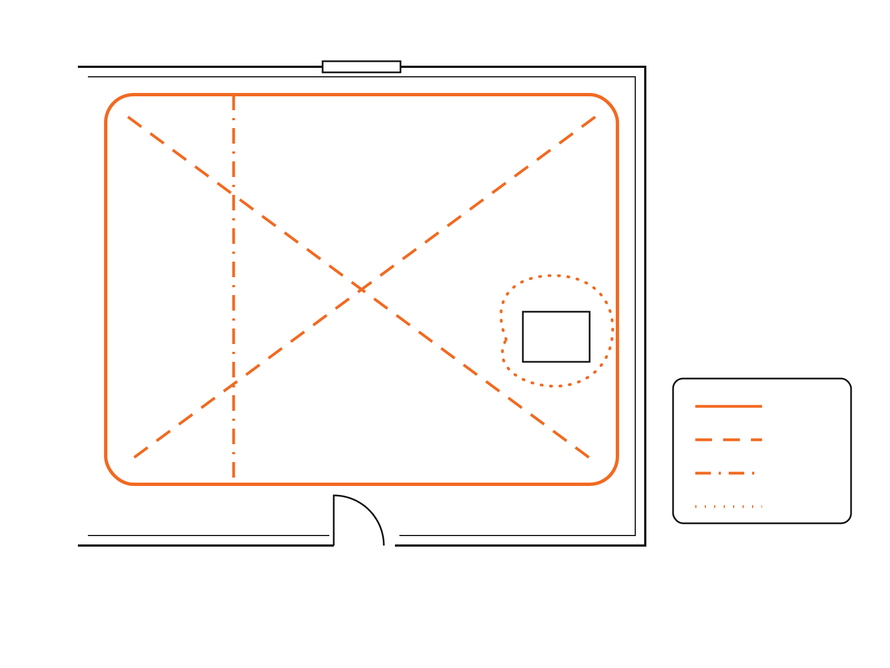

Workshop
Telling stories inside a scanned place
Part 1: authoring a story in the Spatial Storytelling Engine. Part 2: making the 3D scan, easily.
Demo
Why this started
A place that was changing, and the story that belongs to it.
Switch to browserToday
Two parts, in this order
1. Telling the story
Assume the 3D scan already exists. How a story is built inside it: sections, waypoints, media, and the editorial choices that matter.
2. Making the 3D
How to capture a place with a phone, and get the scan into the engine. Easier than it looks, once you know the one rule.
Telling stories inside a scan
Places disappear. Stories disappear faster.
Demolition, redevelopment and closure have always outpaced documentation. The knowledge of a place lives in people, and leaves when they do.
The gap
Capture and story live in different places
Capture tools
Turn a phone into a scanner in minutes. They treat the scan as the deliverable: the output is a model, and the story, if there is one, lives somewhere else.
Community heritage work
Rich in narrative, thin on spatial capture. Recording stories, but not places. When the building comes down, the story loses its anchor.
The gap is not in the technology. It is in the workflow.
The idea
The scan is a common ground for everyone's story
Scanning a place is now easy: anyone with a phone can do it in minutes.
What matters is what the scan becomes. Treated as common ground, one capture of a place can hold many accounts of it, without any one overwriting the others.
Who it is for
Anyone with a story about a place, and nowhere to put it
- Community documentarians and local history groups
- Oral historians
- Journalists reporting on a site
- Architects and conservators
- Residents
- Curators and exhibition makers
- Artists and filmmakers
- Independent shops, studios and workshops
- Anyone exploring Gaussian splatting who wants more than a spinning turntable
None of them should need a developer.
Two ways to tell it
One story file, two views, switchable live
Two ways to tell it
Which view suits which story
Page view
The narrative controls the pacing. The reader reads and listens, and steps into the scan at the moments that call for it.
Long-form journalism. Stories spanning several places. Authors who write first and scan second. Readers who would rather read than navigate.
Immersive view
The scan is the stage. The reader moves through the place, and the story meets them at each spot.
Place-led stories. Interiors and architectural detail. Oral accounts tied to particular spots. Museum-style presentation.
Anatomy of a story
Sections and waypoints
Sections
Each section is one beat of the story: text, an image, audio or video. Add as many as the story needs, in order.
Waypoints
A saved camera view in the scan. Frame the scene, add a waypoint, then point a section at it. This is what makes the story spatial.
Anatomy of a story
Behind it: plain files
my-story/ ├─ story.md └─ assets/ ├─ scan.sog ├─ before-1970.jpg └─ interview.mp3 # story.md --- title: "The composing room" model: assets/scan.sog --- ## [item-01] Where the presses stood …
A story is one Markdown file and a folder of media. No database, nothing proprietary.
You never have to touch this file — the editor writes it. But it means you can read it, copy it, zip it, archive it, and open it in twenty years without this software.
Editorial craft
A scan is not yet a story
Given only a space, a reader will look around it and leave. The scan records what a place looks like. It does not say what happened there, who it mattered to, or what changed.
Editorial craft
What the scan gives you that nothing else can
People have spatial memory. We recall memories when we return to a place — so the cues that bring them back are spatial too.
Extent
How far. How big. How enclosed. The size of a room is part of how it is remembered.
Adjacency
What is next to what, and what you pass on the way. Memories are linked by where things were.
Position
Where the reader is standing when they are told something. Standing in the spot puts them in the memory.
Use the scan for these. Use other media for everything else.
Editorial craft
What each medium contributes
Text
Names, dates, chronology, attribution — anything that has to be stated rather than shown.
The quickest to read, and the easiest to overdo.
Photographs
Time depth: what stood here before, what was removed, what the scan cannot resolve.
The best medium for showing change.
Video
Process and duration: craft, ritual, machinery, weather.
Anything that only exists as action.
Voice
Testimony, and presence without a portrait.
Accent, hesitation and pace carry what no transcript keeps.
Editorial craft
What a piece of media is attached to
A point
"It happened here."
A surface
"This wall, this floor, this sign."
An object
"This machine, this chair."
A viewpoint
"This is what they saw from here."
The same recording means something different depending on where the camera puts the reader when it plays.
Editorial craft
Route, pace and restraint
Route or freedom
An authored route aids understanding. Open exploration aids discovery. Too much of either loses the reader, or railroads them.
Density
Decide where to attach nothing. Empty space is pacing, not an unfinished section.
Setting or subject
Is the place the thing being described, or the room a different story is told in? These call for different treatments.
Editorial craft
Honesty
Gaps
What was not scanned, could not be photographed, or no one is left to tell. Mark absence; do not paper over it.
Sources
A scan reads as evidence. Attribute and date every piece of media, and say where you are uncertain.
Access
Transcripts and captions. A reader who cannot or will not navigate 3D still needs the story — the page view is that route.
Live demo
Building a story in the editor
- Upload the scan — a splat (
.sog,.ply,.spz…) or a.glbmesh. - Fill in the details — title, author, location, date.
- Add sections — text, image, audio, video — uploading media as you go.
- Add waypoints — frame the scene, save the view, point a section at it.
- Preview both views, then Save to gallery.
Exercise
Write a short story inside a scan
- Pick one of the scans provided.
- Write three to five sections.
- Give every section a waypoint.
- Preview it in both views.
- Save, and export.
Ask yourself
- Where does the reader begin?
- Which section needs the scan, and which needs another medium?
- Where should nothing be attached?
Publishing
From gallery to website

Tick the stories you want and Export. You get a zip containing a complete website.
One story selected: the site opens straight into it.
Several: the site opens on a gallery, and readers choose.
Publishing
Putting it online
Any static host
The export runs anywhere that serves files. No backend, no build step, no server setup.
Drag and drop
The easiest route: unzip, and drag the site folder onto Netlify. It is live in under a minute.
Collections
Several stories about one place? A collection page becomes the site's front door, before readers pick a story.
Need to change something later? Import the exported zip back into the editor and carry on.
Ownership
Your story stays yours
A story is plain files you hold. No account, no upload to anyone. If the engine stopped tomorrow, every exported story would keep working.
Consent comes first
Voice and video carry obligations that text and photographs of a building usually do not. Settle what may be published, and where, before you record — not after.
Demo
The whole path, live
A story that went all the way: captured, authored, published.
Switch to browserMaking the 3D, easily
Demo
What good capture looks like
A scan that holds up when the reader moves in close.
Switch to browserThe tool
You already have a scanner
Scaniverse on a recent phone. Free, on iOS and Android, no account needed.
Choose Splat mode. It processes on the phone in about a minute, and uploads nothing unless you ask it to.
Comfortable
A single object, a monument, a room.
Less so
A whole building exterior, or a sequence of connected rooms, in one capture.
The one rule
Rotation is not movement. Take a few steps.

The software finds the same feature in several frames and works out where the camera must have been. That needs the feature to shift between frames — and it only shifts when the camera moves.
Standing still and panning records a panorama, not a place.
Objects
Circle it. Change height.

- Start with one slow loop, far enough back to keep the whole subject in frame. End where you began.
- Then loop again high, angled down, and low, angled up — or spiral.
- Slower than feels natural. Every surface you care about should be seen from at least three positions.
Objects
Get closer in steps

Hold your distance steady within a pass. Change it between passes.
Jumping straight from the whole to a tight detail fails: nothing in the close frame connects it to anything else. Keep some context in frame even at the closest range.
Rooms
Walk one way. Look another.

Inside a room you are inside the subject, so circling it is not an option. You can still create the movement the software needs.
Look diagonally across the room, not at the nearest wall, with something near, middle and far in shot.
Rooms
Weave through it, don't just walk the edge

- Around the edge, corner to corner, and straight across.
- Small arcs around the objects that matter.
- The same routes again looking up, then looking down — tilting while walking, never from one spot.
Rooms
Join the spaces together
An excellent capture of one room and an excellent capture of the next can still have nothing describing where they are relative to each other.
Record a pass that travels between them — through the doorway, into the second room, and back — with features from both in shot.
Several short passes, not one long take
Each pass has one job. If one is ruined by blur or someone walking through, redo that pass, not the session.
Back to the story
Scan for the story you will tell
Holds the space together
Walls, floor, ceiling, corners, doors, large furniture. Needs to be solid, not beautiful.
Carries the story
The photograph, the machine, the sign, the chair. Readers will move in close, so it needs real detail.
Capture the room well enough to be stable, then spend your remaining time on what the story rests on.
Into the engine
From phone to story
- Export from Scaniverse as PLY.
- Clean it in SuperSplat, in the browser: delete stray splats, crop to what you want.
- Save as SOG — 10–20× smaller than the PLY.
- Upload the SOG in the editor.
Size
Aim for under 15 MB per scan; 40 MB at most.
Upside down?
Set Model orientation to Flip upright in the story details.
When to go further
Desktop processing, when the phone is not enough
- For large or connected spaces, record video and train on a desktop.
- Postshot: shortest desktop path; exporting needs a paid licence.
- Open source route: free, more steps, full control.
- Both need an NVIDIA GPU with 8 GB of VRAM or more.
Optional exercise
Scan something, and put it in your story
- Pick a small object or a corner of the room.
- Scan it in Scaniverse: loop, change height, get closer in steps.
- Export, clean, save as SOG.
- Replace the scan in the story you wrote earlier.
Before you stop recording
- Has every important surface been seen from three positions?
- Did the first loop close?
- Did you stand still and pan anywhere?
In short
What to take away
The story
- The scan is a common ground for everyone's story.
- Use the scan for extent, adjacency and position. Use other media for the rest.
- Your story is plain files you own.
The scan
- Move, don't pan.
- Circle it, change height, get closer in steps.
- In rooms, weave through and join the spaces.
Where next
The Spatial Storytelling Guide, and the Spatial Storytelling Engine
The guide covers scanning, processing and storytelling in depth. The engine is where stories are built and published. Both are free.
This deck is part of the Spatial Storytelling Guide by Into Storymode, licensed CC BY 4.0. Engine interface screenshot from the Spatial Storytelling Engine, MIT licence.